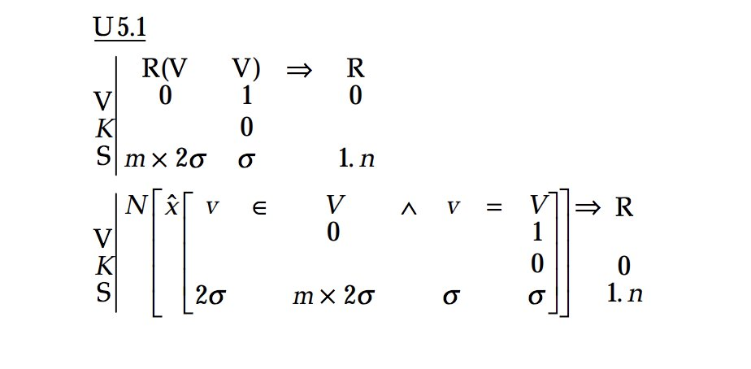
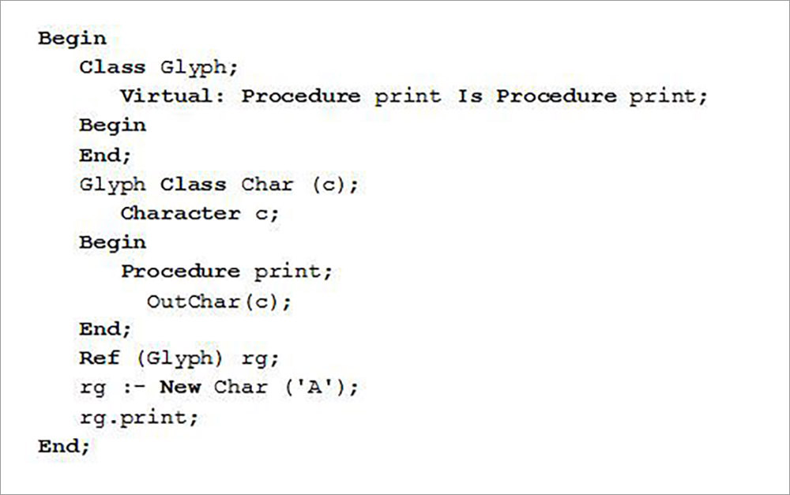

HTS Coding Club

19th Century
Believe it or not, the first-ever computer, also known as the Difference Engine, was actually built way back in the 1830's by English mathematician Charles Babbage. Although the machine looked nothing like a computer we would see today, it did have some of the key features, such as storage and ability to process information. It was used to tabulate polynomial functions automatically. A few years later, in 1843, a mathematician named Ada Lovelace, also known as the first computer programmer, developed the first machine algorithm for the Difference Machine. Together, they set the foundation for computer programming.

Early 20th Century
In 1944, a full century later, the first "real" programming language, Plankalkül, was invented by a Gerrman engineer named Konrad Zuse. In 1949, Assembly Language, a low-level programming language, was developed. It used simplified machine code, making the process of coding more convinient. Later that year, Shortcode, the first high-level programming language was designed. This invention later lead to the development of FORTRAN, BASIC, and PASCAL, which were easy to comprehend and utilize, just like the programming languages we use today. As well as that, FORTRAN, invented in the 1950's, also featured the first compiler, written by American computer scientist Grace Hopper.
Late 20th Century
From the 1960's to the 1990's, waves of programming languages began to appear. These include Simula, which was the first object-oriented programming langauge, as well as Prolog, which was the first logic programming language. Other significant languages invented during this time include C, SQL, and C++. Despite being invented in the 1980's, the language C++, which was basically C, but with the "classes" element, is still among the most popular programming lanuguages used by programmers today.
21st Century
Most of the coding languages we use today were invented in the 1990's. This was also when the internet was first invented, which gave an oppourtunity for many new languages to be adopted. These languages include Java, Javascript, Python, R, and PHP. The language HTML, which was used to create websites liket his one, was also created during this time. Languages like C#, Go, and Swift, were developed just a few years ago. In the 21st century, people are mainly focusing on developing languages that are more functional and visual. Early research into new technologies such as quantum programming languages have also begun. In the future, we might even see code generated by artificial intelligence.

Timeline of Programming Languages